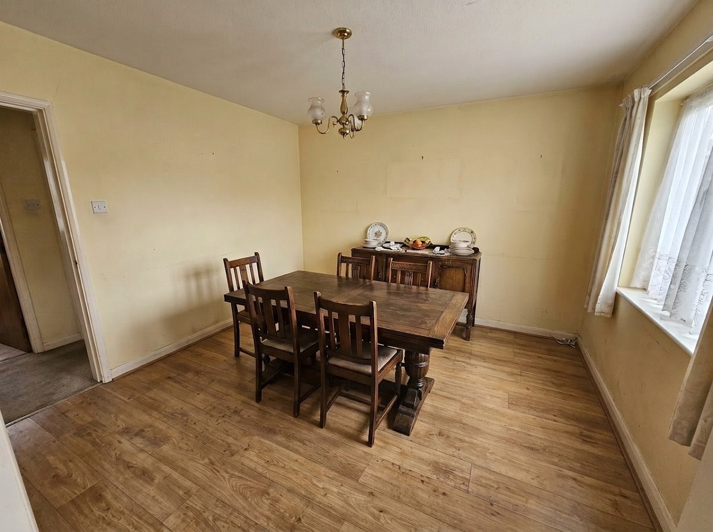
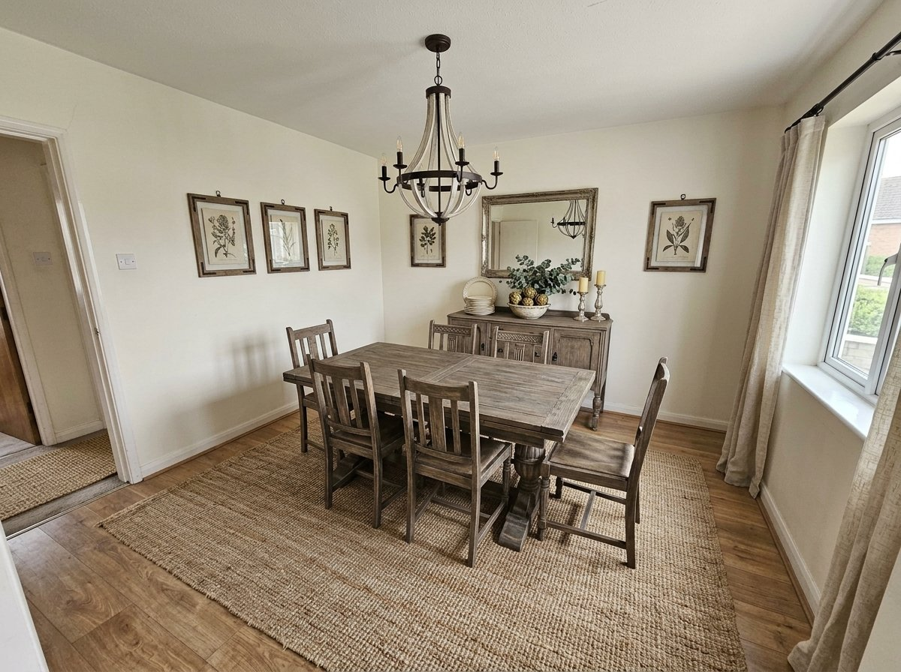
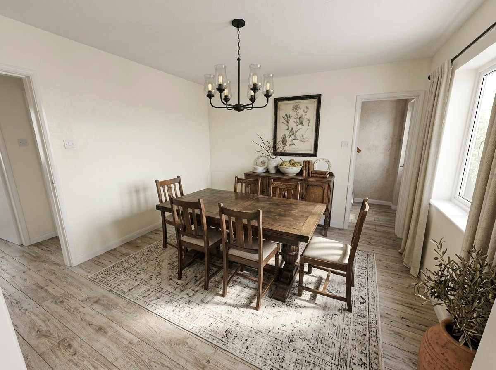
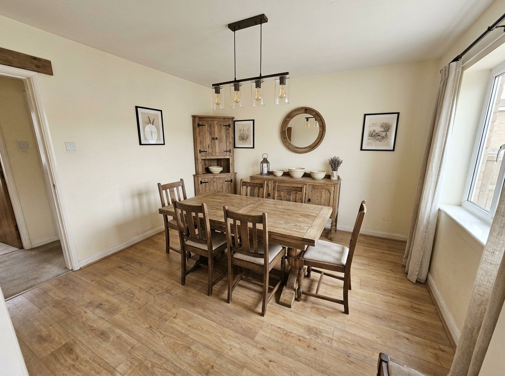
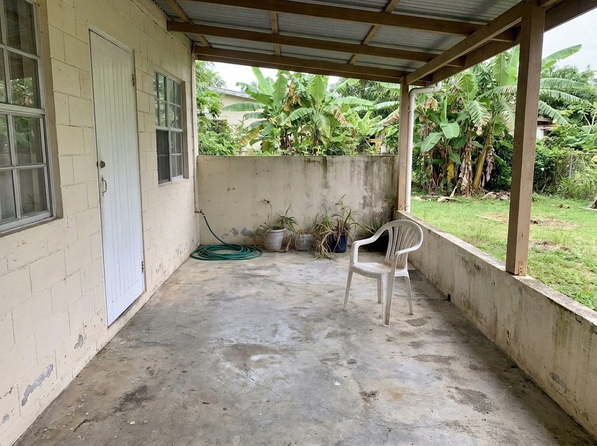
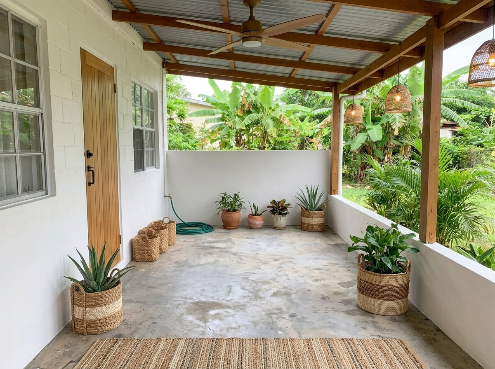

0 of 4 runs pass. Pass = marked pieces gone, no unmarked piece lost, nothing new invented, layout and camera unchanged, style applied.
one chair of a dining set (right-hand end) (farmhouse)
Restyle told which piece was taken out and where: a chair is back at the right-hand end. 1 image call(s), 10 s, edit frame 0.90, marked piece gone: true


Same: chair back at the right-hand end, and a doorway invented in the back wall. 1 image call(s), 11 s, edit frame 0.90, marked piece gone: true


Same: chair at the right-hand end, a corner cabinet added. 1 image call(s), 11 s, edit frame 0.98, marked piece gone: true

two pieces: plastic table and the front chair (tropical-modern)
Same: the unmarked chair is gone too. 1 image call(s), 10 s, edit frame 0.93, marked piece gone: true/true



